Introduction
RPhoto est un logiciel destiné à mettre en valeur vos photos numériques, via quelques opérations simples dans une interface rapide et efficace pour traiter un grand nombre de photos :
- Recadrer vos photos en conservant le ratio 4:3, ou en choisissant un nouveau ratio, sans perte de qualité ; indispensable pour éviter les bords blancs lors des tirages papier
- Redresser des photos prises de travers, en indiquant simplement une verticale ou une horizontale.
- Ajouter un commentaire sur vos images JPEG
- Et de nombreuses autres possibilités, comme consulter les informations Exif, déplacer ou renommer les images,...
Utilisation classique
L'utilisation classique de l'application est la suivante :
- Lancement de l'application et réglages préliminaires
- Redressement de l'image (rotation)
- Recadrage
- Commentaire
- Sauvegarde et passage au fichier suivant.
Répertoires de travail et Réglages
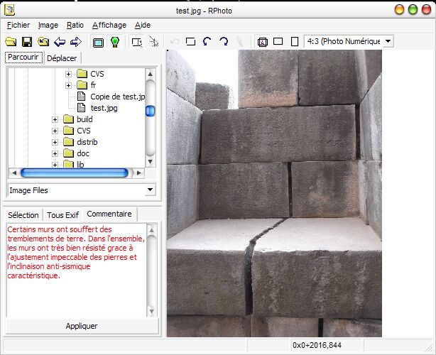
Lancez l'application, et sélectionnez dans l'onglet Parcourir votre répertoire de travail. Avant de modifier les photos, assurez-vous d'avoir bien réalisé une copie de sauvegarde dans un autre répertoire. Sélectionnez la première image du répertoire ; celle-ci s'affiche alors dans l'écran principal.
Choisissez votre format cible : tirage en 4:3 photo numérique, en 24:36 de photo argentique, ou dans un autre format que vous pouvez définir vous même (cf paragraphe Barre d'outils). Vous pouvez également choisir d'autres paramètres globaux (orientation, répertoire de destinations, préférences,...)
Rotation et Correction d'angle
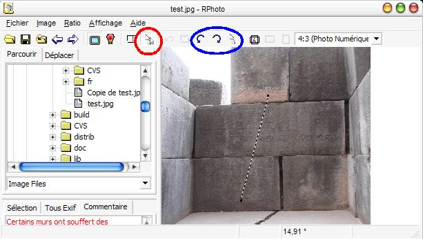
Utilisez les boutons Rotation Gauche / Rotation Droite ou les raccourcis l (left) / r (right) pour faire redresser l'image.
Si malgré tout, la photo a été prise de travers, vous pouvez la redresser via la correction d'angle (cette opération ne peut pas être faite en mode JPEG sans pertes) :
- Sélectionnez le mode correction d'angle (barre d'outil, menu, ou raccourci 'i') ; le mode JPEG sans pertes se désactive automatiquement.
- Tracez une verticale ou une horizontale sur la photo.
- Redressez l'image (barre d'outil, ou raccourci via la touche "Entrée") et patientez quelques instants pour que la rotation soit effectuée.
- Si la rotation ne vous plait pas, vous pouvez l'annuler via le bouton Annuler ou le raccourci Ctrl-Z et recommencer.
Recadrage
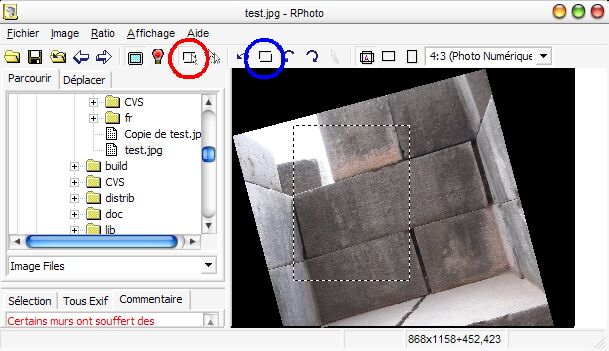
Une fois l'image raisonnablement redressée, vous pouvez la recadrer pour mieux la mettre en valeur.
Pour cela :
- Assurez-vous de bien être repassé en mode recadrage (automatique, sinon via les boutons ou le raccourci "c"
- Sélectionnez la région souhaitée (ajustez si nécessaire les options d'orientation et de ratio)
- Recadrez, en utilisant le bouton Recadrer ou le raccourci "Entrée" (ou "c").
- Si le résultat ne vous plait pas, vous pouvez annuler via le bouton Annuler ou le raccourci Ctrl-Z et recommencer.
Commentaire
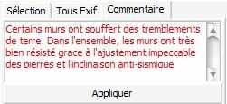
Il ne reste plus qu'à commenter l'image. Pour cela, activez l'onglet "Commentaire" ou utilisez le raccourci "t" et écrivez votre texte.
Une fois terminé, appuyez sur le bouton "Appliquer" ou utilisez le raccourci Ctrl-Entrée; le texte repasse alors en noir et est maintenant mémorisé.
Sauvegarde et Fichier Suivant
Voilà vous avez fait l'essentiel ! N'oubliez pas de sauvegarder (bouton Save, ou raccourci "s"), sauf si vous avez choisi le mode enregistrement automatique. Vous pouvez alors passer au fichier suivant, via le bouton Suivant ou le raccourci "PageDown".
Renommage et déplacement
Deux autres possibilités courantes :
- Renommer le fichier : cliquer une deuxième fois sur le nom de fichier dans l'arborescence de l'onglet "Parcourir" ; vous pouvez alors modifier le nom de fichier.
- Déplacer un fichier : dans l'onglet "Déplacer", choisissez le répertoire cible, puis cliquez sur "Déplace Ici" ou utilisez le raccourci "m" (move).
Redimensionnement
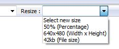
Si vous trouvez la taille de l'image non adaptée à ce que vous voulez, vous pouvez également la redimensionner, c'est à dire diminuer ou augmenter le nombre de pixel. Sélectionnez alors dans la liste déroulante le nouveau format que vous souhaitez, ou entrez celui que vous souhaitez s'il n'est pas présent, en respectant les formats autorisés (en pourcentage, en taille fixe, ou en taille cible sur le disque en kilo-octets)
Pour le reste des fonctionnalités, consulter la présentation complète ci-dessous.
Présentation complète des écrans
Composants de l'écran
Ecran principal
L'application est construite autour d'un écran principal qui donne accès à toutes les fonctions via les menus, la barre d'outils et les onglets latéraux.
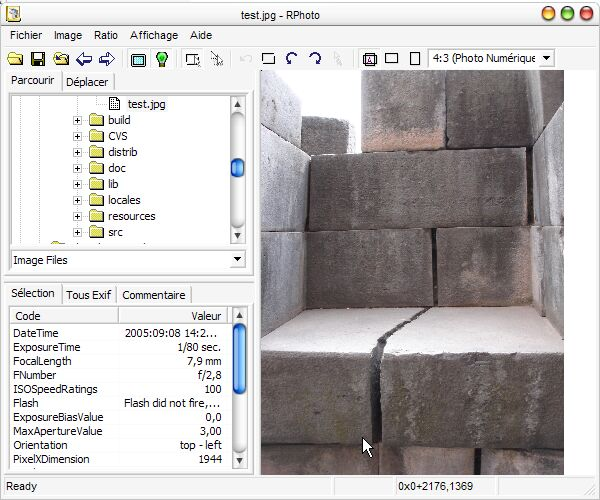
La barre d'outils, les onglets latéraux et la barre d'état sont décrits dans les points suivants du document. L'image occupe le reste de l'image.
Quelques points intéressants à signaler :
- Il est possible de faire varier l'espace réservé aux onglets via glisser/déposer de la barre de séparation.
- Afin de ne pas interférer avec les écrans de saisie, les raccourcis claviers présentés dans les menus ne sont disponibles que vous êtes en train de travailler sur la zone image. En cas de disfonctionnement, un simple clic sur la zone d'image rétablira la possibilité d'utiliser les raccourcis clavier
- En mode recadrage, l'outil de sélection est un rectangle qui respecte le ratio et le type de format choisi (ex : format 4:3 en mode portrait) ; dans le mode portrait ou paysage, l'outil de sélection prendra la forme qui permet de se rapprocher le plus de l'extrémité de votre souris.
- En mode correction d'angle, l'outil de sélection est un segment. Tracez simplement une verticale ou une horizontale. Le logiciel détectera automatiquement si cela est une verticale ou une horizontale. Si le choix ne convenait pas, tournez l"image avec les boutons 90° pour redresser l'image.
- Pour déplacer la sélection, réalisez un cliqué-déplacé au centre du rectangle ou sur le segment. Vous pouvez également déplacer la forme en utilisant les flèches du clavier (en maintenant Ctrl pour aller plus vite).
- Pour modifier la sélection, réalisez un cliqué-déplacé sur une des poignées (carrés noir dans les coins de la forme) ou utilisez les flèches du clavier en maintenant la touche Shift pressée. Si ceci est inopérant, il se peut que les arrondis dus au ratio ne permette pas la modification que vous souhaitez. Maintenez alors les touches Shift et Ctrl pressées pour augmenter le pas d'incrémentation. Un simple clic en dehors de la sélection supprimera la sélection en cours.
- Vous pouvez passer du mode plein écran au mode détail lors de la sélection pour affiner votre sélection.
Onglet d'exploration de fichiers
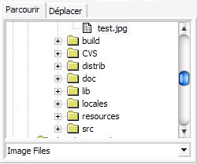
- Un simple clic sur un fichier déclenche son ouverture dans RPhoto (et la fermeture du fichier précédent).
- Seuls sont affichés les fichiers dont le type correspond au type sélectionné dans la fenêtre déroulante du bas ("Image files"). Au cas où le fichier que vous voulez éditer n'apparait pas, sélectionnez "All files (*.*)".
- Pour renommer le fichier, cliquez une deuxième fois sur son nom. Pour renommer un répertoire, cliquer trois fois de manière espacée sur son nom. Vous ne pouvez pas modifier le nom d'un répertoire dans lequel est contenu le fichier actuellement traité.
- Les flèches précédent / suivant (ou raccourcis PageUp / PageDown) s'applique par rapport à la sélection en cours dans cet affichage. Suivant se rapportera donc au fichier suivant la sélection en cours dans l'ordre d'apparition dans cette arborescence.
- Pour ouvrir facilement un fichier, il est également possible de faire un glisser-déposer du fichier en question depuis l'explorateur, ou encore d'indique le nom du fichier sur la ligne de commande ; cela permet par exemple de placer RPhoto dans votre menu "Envoyer vers..." et d'ouvrir RPhoto d'un simple clic droit sur le fichier à retoucher.
Onglet de sélection du répertoire de destination lors du déplacement d'un fichier
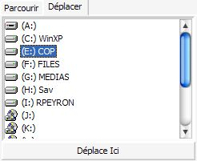
Pour déplacer un fichier, il suffit de sélectionner dans l'onglet "Déplacer" le répertoire de destination désiré, et d'appuyer sur le bouton "Déplace Ici", ou d'utiliser le raccourci clavier "m" (move). Il n'est pas nécessaire de re-sélectionner le répertoire à chaque fichier, ni d'avoir l'onglet "Déplacer" visible pour utiliser le raccourci clavier.
Onglets EXIF (JPEG)
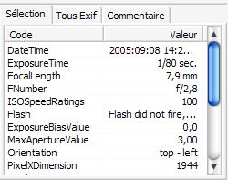
Ces deux onglets affichent les attributs EXIF s'il y en a dans le fichier. Ces attributs ne sont pas modifiables.
Le premier onglet ne liste qu'une sélection d'attributs EXIF, alors que le second donne l'intégralité de tous les attributs de toutes les sections EXIF (voir le paragraphe Préférences pour plus de détail).
Les tags propriétaires de l'appareil ne sont pas tous bien lus, et la miniature n'est pas affichée. Aucun de ces attributs n'est modifié (notamment, ni la taille, ni la miniature ne sont modifiées, ce qui permet de garder une trace de l'image originale). Dans le cas où la valeur de l'arribut dépasse la taille de l'onglet, laissez quelques instants le pointeur de la souris sur cet attribut afin de voir la valeur dans une bulle (sous Windows seulement).
Onglet Commentaire (JPEG)
Cet onglet permet de visualiser et modifier le commentaire d'un fichier JPEG.
Pour modifier le commentaire, entrez le texte désiré, puis appuyez sur le bouton "Appliquer". Tant que ce bouton est appliqué, et que le texte est rouge, le commentaire n'est pas enregistré. Une fois enregistré, le commentaire repasse en affichage normal en noir.
Barre d'état
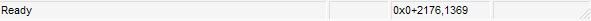
La barre d'état vous permet de suivre le comportement de l'application.
La première section indique le dernier message de l'application, ou une description du bouton ou menu pointé par la souris.
La troisième section est relative à la sélection : taille et position du rectangle (WxH+x,y) ou angle en degrés pour le segment. Les autres sections sont actuellement inutilisées
Le pointeur de la souris est également un bon indicateur pour savoir si l'application est occupée ; dans ce cas, le pointeur sera remplacé par un sablier.
Barre d'outil
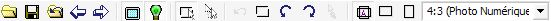
 : ouvre un fichier via une boîte de dialogue de sélection.
: ouvre un fichier via une boîte de dialogue de sélection.
 : sauvegarde le fichier en cours (remplace le fichier actuel).
: sauvegarde le fichier en cours (remplace le fichier actuel).
 : ré-ouvre le fichier tel qu'il était lors du dernier enregistrement
: ré-ouvre le fichier tel qu'il était lors du dernier enregistrement
 : passe au fichier précédent dans le répertoire.
: passe au fichier précédent dans le répertoire.
 : passe au fichier suivant dans le répertoire.
: passe au fichier suivant dans le répertoire.
 : active / désactive le mode plein écran ; dans ce mode, l'image est réduite afin de tenir entière dans la fenêtre.
: active / désactive le mode plein écran ; dans ce mode, l'image est réduite afin de tenir entière dans la fenêtre.
 /
/  : active / désactive le mode opération JPEG sans pertes ; lorsque la lumière est rouge, cela signifie qu'il n'est pas ou plus possible d'utiliser ce mode (fichier non JPEG, ou une modification incompatible avec le mode sans perte, comme une correction d'angle)
: active / désactive le mode opération JPEG sans pertes ; lorsque la lumière est rouge, cela signifie qu'il n'est pas ou plus possible d'utiliser ce mode (fichier non JPEG, ou une modification incompatible avec le mode sans perte, comme une correction d'angle)
 /
/  : sélectionne le mode actuel : recadrage / correction d'angle. Lors d'un second appui, réalise l'action souhaitée.
: sélectionne le mode actuel : recadrage / correction d'angle. Lors d'un second appui, réalise l'action souhaitée.
 : annule l'opération précédente, dans la limite du nombre maximum indiqué dans les préférences ; tant qu'aucune autre action n'est effectuée, les annulations peuvent être rétablies via le menu Edition / Rétablir.
: annule l'opération précédente, dans la limite du nombre maximum indiqué dans les préférences ; tant qu'aucune autre action n'est effectuée, les annulations peuvent être rétablies via le menu Edition / Rétablir.
 : recadre l'image avec le cadre actuellement défini (mode JPEG sans pertes possible).
: recadre l'image avec le cadre actuellement défini (mode JPEG sans pertes possible).
 : tourne l'image de 90 degrés sur la gauche (mode JPEG sans pertes possible).
: tourne l'image de 90 degrés sur la gauche (mode JPEG sans pertes possible).
 : tourne l'image de 90 degrés sur la droite (mode JPEG sans pertes possibles).
: tourne l'image de 90 degrés sur la droite (mode JPEG sans pertes possibles).
 : tourne l'image de quelques degrés ; pour cela, il faut être dans le mode correction d'angle et avoir traçé une verticale ou une horizontale sur l'image.
: tourne l'image de quelques degrés ; pour cela, il faut être dans le mode correction d'angle et avoir traçé une verticale ou une horizontale sur l'image.
 /
/  /
/  : sélectionne le type de cadre souhaité : n'importe / portait / paysage.
: sélectionne le type de cadre souhaité : n'importe / portait / paysage.
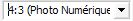 : sélectionne le ratio ou la taille du cadre souhaité ; au delà de ceux définis, vous avez la possibilité d'en ajouter de nouveaux en saisissant directement votre ratio au format x:y (4:3) ou votre taille fixe au format WxH (ex : 320x200).
Préférences
Un écran global permet de modifier tous les réglages, qu'ils soient ergonomiques ou techniques.
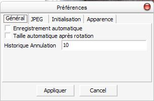
- Général / Enregistrement automatique : sauvegarde automatiquement vos modifications avant de passer au fichier suivant. Très efficace pour aller plus vite, mais à utiliser avec prudence.
- Général / Taille automatique après rotation : recadre automatiquement l'image après une correction d'angle, selon la sélection la plus adaptée. Sinon, le programme laisse l'image non recadrée, avec le cadre optimal de sélection positionné au centre.
- Général / Historique Annulation : nombre maximum d'annulations conservées.
- JPEG / Chemin de l'exécutable JPEGTran : jpegtran est l'outil utilisé pour les opérations JPEG sans pertes ; sous Windows, il est distribué avec l'application, vous ne devriez pas avoir à modifier ce paramètre.
- JPEG / Chemin de l'exécutable JHead : jhead est l'outil utilisé pour les opérations JPEG sans pertes ; sous Windows, il est distribué avec l'application, vous ne devriez pas avoir à modifier ce paramètre.
- JPEG / Rotation automatique à l'ouverture : dans le cas où une orientation spécifique est précisée dans les tags Exif, permet la rotation automatique pour respecter cette indication. Une fois l'image redressée, le tag Exif d'orientation est remis à zéro. Nécéssite l'outil jhead.
- JPEG / Affiche les alertes JPEGTran : certaines opérations sans pertes ne peuvent être réalisées sans légère altération de l'image (arrondi à un bloc de 8 pixels). Dans la majorité des cas, vous pouvez ignorer ces messages ; ils apparaitront alors simplement dans la barre d'état sans perturber plus.
- JPEG / Qualité JPEG : qualité de l'enregistrement JPEG en mode avec pertes ; l'ordre de grandeur classique pour un enregistrement de qualité supérieure d'un appareil photo est de 98 ; vous pouvez estimer la qualité de vos fichiers via le menu Image / JPEG / Détecte la qualité
- JPEG / Sélection de tags Exif : les tags Exif étant souvent nombreux et désordonnés, l'onglet de sélection vous permet de n'en afficher que quelques uns, et dans l'ordre que vous souhaitez ; renseignez ici la liste de ces tags, séparés par des virgules.
- Initialisation / Répertoire par défaut : ouvre ce répertoire au lancement de l'application
- Initialisation / Se souvenir du dernier répertoire ouvert : met à jour le répertoire par défaut à chaque ouverture de fichier
- Initialisation / Ratio & Orientation : décrit le ratio et le type de cadre à sélectionner lors du lancement de l'application
- Initialisation / Liste des ratios : liste des ratios à proposer dans la liste déroulante, en plus des standards (format : "x:y (Commentaire)", séparés par "|")
- Initialisation / Ratio des guides : il est possible de rajouter 2 lignes guides horizontales et verticales positionnées à une proportion de l'image ; ce champ permet de sélectionner une des valeurs proposées, ou d'en saisir une autre (format : "0,xx (Commentaire)") ; mettre 0 pour supprimer les guides
- Initialisation / Liste des dimensions : liste des dimensions d'images à proposer dans la liste déroulante, en plus des standards (format : "XXXxYYY (Commentaire)", séparés par "|")
- Apparence / Affiche l'image entière dans la fenêtre : valeur par défaut pour le bouton "Plein Ecran".
Licence, Mise à jour, Support
Ce programme est distribué sous licence GPL ; cela signifie globalement que son utilisation est entièrement gratuite et que le code source est également disponible pour que vous puissiez y apporter des évolutions dans le respect de la licence GPL.
L'adresse de référence de ce logiciel est : http://people.via.ecp.fr/~remi/soft/rphoto/rphoto.php3. RPhoto est également disponible sur Freshmeat et Sourceforge. Vous y trouverez les mises à jour, ainsi que les adresses contact pour toute demande de support.